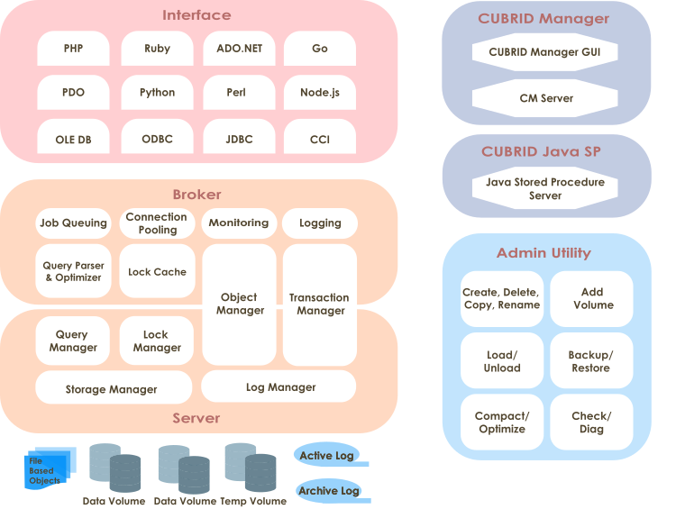
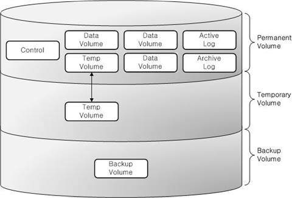

CUBRID 소개¶
CUBRID의 구조 및 특징을 설명한다. CUBRID는 객체 관계형 데이터베이스 관리 시스템으로서, 데이터베이스 서버, 브로커, CUBRID 매니저로 구성된다. CUBRID는 인터넷 데이터 서비스에 최적화된 데이터베이스 시스템이며, 사용자가 편리하게 사용할 수 있는 다양한 기능을 제공한다.
이 장에서 설명하는 주요 내용은 다음과 같다.
시스템 구조: 데이터베이스 볼륨 구조, 서버 프로세스, 브로커 프로세스, 인터페이스 모듈에 대해 설명한다.
CUBRID의 특징: CUBRID의 트랜잭션, 백업 및 복구, 파티션, 인덱스 기능, HA 기능, Java 저장 프로시저, 클릭 카운터, 관계형 데이터 모델 확장에 대해 간단히 설명한다.
시스템 구조¶
프로세스 구조¶
CUBRID는 객체 관계형 데이터베이스 관리 시스템으로서, 데이터베이스 서버, 브로커, CUBRID 매니저로 구성된다.
데이터베이스 서버는 CUBRID 데이터베이스 관리 시스템의 핵심 구성 요소로 데이터 저장 및 관리 기능을 수행하며, 멀티스레드 기반 클라이언트/서버 방식으로 동작한다. 데이터베이스 서버는 사용자가 입력한 질의를 처리하고, 데이터베이스 내의 객체를 관리한다. CUBRID 데이터베이스 서버는 잠금 기법과 로깅 기법을 이용해 다수 사용자가 동시에 사용하는 환경에서도 완벽한 트랜잭션을 지원하며, 운영에 필요한 데이터베이스 백업과 복구 기능을 지원한다.
브로커는 서버와 외부 응용 프로그램 간의 통신을 중계하는 CUBRID 전용 미들웨어로서, 커넥션 풀링, 모니터링, 로그 추적 및 분석 기능을 제공한다.
CUBRID Manager는 사용자가 데이터베이스와 브로커를 원격으로 관리할 수 있게 해주는 GUI 도구이다. 사용자가 데이터베이스 서버에 SQL 질의를 수행할 수 있게 해주는 편리한 도구인 질의 편집기를 제공한다.
CUBRID 자바 저장 프로시저 (Java SP) 서버는 데이터베이스 서버에서 요청한 자바 저장 프로시저/함수를 처리하는 실행 (Execution) 서버이다.

데이터베이스 볼륨 구조¶
아래 그림은 CUBRID 데이터베이스 볼륨의 구조를 도식화한 구성도이다. 데이터베이스 볼륨을 크게 영구적 볼륨, 일시적 볼륨, 백업 볼륨으로 분류하고, 아래 구성도를 참고하여 각각에 속하는 볼륨 및 특징을 살펴보기로 한다.

데이터베이스 볼륨을 생성, 추가, 삭제하는 명령에 관해서는 createdb, addvoldb 그리고 deletedb를 참고한다.
영구적 볼륨(Permanent Volume)¶
Data Volumes
영구적 볼륨은 한번 생성되면 영구적으로 유지되는 데이터베이스 볼륨이다.
일반적으로 데이터베이스 재시작이나 비정상 종료 후에도 보존해야 하는 데이터를 저장한다. 영구적 데이터의 타입은 다음과 같다.
테이블(행 및 멀티미디어 데이터) 은 내부적으로 힙 파일 및 힙 오버플로우 파일에 저장되며, 테이블당 하나의 힙 파일 또는 힙 오버플로우 파일을 사용한다.
인덱스(키 및 멀티미디어 데이터) 는 내부적으로 b-tree 파일 및 b-tree 오버플로우 파일에 저장되며, 인덱스당 하나의 b-tree 또는 b-tree 오버플로우 파일을 사용한다.
시스템 데이터는 내부적으로 여러 유형의 파일에 저장되며, 시스템 데이터의 종류로는 파일 추적기(tracker), vacuum 데이터, 삭제된 파일 추적기(tracker) 및 클래스명 해시에 해당한다
사용자는 일시적 데이터를 저장할 일부 영구적 볼륨을 명시적으로 할당할 수 있다. 이러한 볼륨은 절대 제거되지 않는다는 점에서는 영구적이지만 일시적 볼륨(Temporary Volume) 와 비슷하게 동작한다.
Note
기존 CUBRID 버전에서는 영구적 볼륨을 generic, data 및 index 와 같이 여러 타입으로 분류해 왔으나, 더 이상 이러한 분류를 사용하지 않는다. 이러한 옵션이 여전히 cubrid createdb 및 cubrid addvoldb 명령에서 허용되긴 하지만 생성되는 볼륨은 동일하며 모든 타입의 영구적 데이터를 저장한다. 볼륨의 용도는 영구적 데이터와 일시적 데이터로만 분류된다.
제어 파일(Control File)
제어 파일은 데이터베이스 내 존재하는 볼륨의 정보, 백업 정보 및 로그의 정보를 저장하는 파일이다.
볼륨 정보 : 데이터베이스 내 모든 볼륨의 이름과 위치, 그리고 내부 볼륨 식별자를 포함하는 정보로서, 데이터베이스가 재시작될 때 CUBRID는 볼륨 정보 제어 파일을 판독하며, 새로운 데이터베이스 볼륨이 추가될 때에 새로운 엔트리를 볼륨 정보 제어 파일에 기록한다.
백업 정보 : 정보 볼륨에 대한 모든 백업의 위치는 백업 정보 제어 파일에 기록된다. 이 제어 파일은 로그 파일이 관리되는 곳에 유지된다.
로그 정보 : 모든 활성 로그와 보관 로그의 이름을 포함하며, 사용자는 로그 정보 제어 파일을 통해 보관 로그의 정보를 확인할 수 있다. 이러한 로그 정보 제어 파일은 로그 파일과 동일한 위치에서 생성 및 관리된다.
이와 같이 각각의 제어 파일은 데이터베이스 볼륨의 위치, 백업 정보, 로그 정보를 포함하며, 데이터베이스가 재시작하면서 읽는 파일이므로 사용자 임의로 변경해서는 안 된다.
활성 로그(Active Log)
활성 로그(active log)는 데이터베이스의 최근 변경 사항을 포함하는 로그이며, 데이터베이스에 문제가 발생하는 경우 활성 로그 및 보관 로그를 이용하여 고장 발생 전의 커밋된 시점으로 완전하게 데이터베이스를 복구할 수 있다.
보관 로그(Archive Log)
보관 로그는 최근의 변경 사항을 포함하고 있는 활성 로그(active log) 공간이 모두 사용된 후에 지속적으로 생성되는 로그를 보관하기 위한 볼륨이다. 시스템 파라미터 log_max_archives 의 값이 0보다 크게 설정된 경우 활성 로그 볼륨의 공간이 소진된 후에 보관 로그 볼륨이 추가된다. 제품 설치 시에는 0으로 설정되어 있다. 보관 로그 볼륨은 log_max_archives 의 설정 값만큼 볼륨 파일이 유지된다. 디스크 공간 확보를 위해 불필요한 보관 로그는 시스템의 설정에 의해 삭제되어야 하지만, 데이터베이스 복구에 사용하려면 이 값을 적절하게 설정해야 한다.
이에 대한 자세한 내용은 보관 로그 관리 를 참고한다.
백그라운드 보관 로그(Background Archive Log)
백그라운드 보관 로그(background archive log)는 백그라운드에서 로그 보관 작업(log archiving)을 수행할 때 사용하는 볼륨이다.
이중 쓰기 버퍼 (Double Write Buffer, DWB) 파일
이중 쓰기 버퍼 파일은 I/O 에러를 방지하기 위하여 디스크에 쓰여지는 데이터 페이지들의 복사본을 저장한다. 이에 대한 자세한 설명은 데이터베이스 볼륨 을 참고한다.
TDE 키 파일 (TDE Key File)
TDE (Transparent Data Encryption) 키 파일은 데이터베이스 암호화를 위한 키들을 담고 있다. 파일 내의 키들은 TDE 유틸리티를 사용하여 관리된다. 이에 대한 자세한 설명은 파일 기반의 마스터 키 관리 와 TDE 유틸리티 를 참고한다.
일시적 볼륨(Temporary Volume)¶
일시적 볼륨은 영구적 볼륨과 상반되는 개념이다. 즉, 일시적 볼륨은 서버 프로세스가 종료될 때 삭제되는 일시적으로 생성되는 저장소 파일이며, 질의 처리 및 정렬을 수행할 때 중간 결과와 최종 결과를 저장하는 데 사용된다.
이러한 파일은 질의의 중간 결과와 최종 결과를 저장할 공간을 제공한다. 요구되는 일시적 데이터 크기데 따라, 우선적으로 메모리에 저장된다.(공간 크기는 cubrid.conf 에 지정된 시스템 파라미터 temp_file_memory_size_in_pages 에 의해 결정됨). 이를 초과하는 데이터는 디스크에 저장한다.
데이터베이스에서는 일시적 데이터를 위한 디스크 공간 할당을 위해 일시적 볼륨을 생성해 사용한다. 그러나 사용자는 cubrid addvoldb -p temp 명령을 통해 일시적 데이터를 저장하기 위한 용도로 영구적 볼륨을 할당할 수도 있다. 이러한 영구적 볼륨이 있는 경우 임시 데이터를 디스크 공간에 저장할 때 일시적 볼륨보다 우선 사용한다.
일시적 데이터를 사용할 수 있는 질의의 예는 다음과 같다.:
SELECT 문 등 결과가 생성되는 질의
GROUP BY 나 ORDER BY 가 포함된 질의
부질의(subquery)가 포함된 질의
정렬 병합(sort-merge) 조인이 수행되는 질의
CREATE INDEX 문이 포함된 질의
일시적 데이터에 의해 시스템의 디스크 공간이 모두 사용되는 것을 방지하려면 다음과 같이 조치할 것을 권장한다.
영구적 볼륨을 미리 생성해 일시적 데이터에 필요한 공간을 확보한다.
cubrid.conf**에서 **temp_file_max_size_in_pages 파라미터를 설정해 질의를 수행할 때 일시적 볼륨에 사용되는 공간의 크기를 제한한다(기본적으로는 제한 없음).
일시적 볼륨(temporary temp volume)이 한번 생성되면 데이터베이스가 재시작될 때까지 유지되며 크기를 줄일 수 없다. 크기가 너무 큰 경우 데이터베이스를 재시작해 일시적 볼륨이 자동으로 삭제되도록 해야한다.
일시적 볼륨의 파일명: 일시적 볼륨의 파일명 형식은 db_name_tnum 이며, 여기서 db_name 은 데이터베이스명을, num 은 볼륨 식별자를 나타낸다. 볼륨 식별자는 32766부터 1씩 감소한다.
일시적 볼륨의 크기 설정: 생성될 일시적 볼륨의 수는 트랜잭션 처리에 필요한 공간 크기에 따라 시스템에서 결정한다. 그러나 사용자가 시스템 파라미터 설정 파일(cubrid.conf)에서 temp_file_max_size_in_pages 파라미터 값을 설정해서 총 일시적 볼륨 크기를 제한할 수도 있다. 기본값은 여유 공간이 있는 한 일시적 볼륨을 무제한으로 생성할 수 있음을 나타내는 -1이다. temp_file_max_size_in_pages 파라미터 값이 0으로 설정된 경우 일시적 볼륨이 생성되지 않고, 시스템은 일시적 데이터에 할당된 영구적 볼륨만 사용한다.
일시적 볼륨의 저장 위치 설정: 기본적으로 일시적 볼륨은 최초 데이터베이스 볼륨이 생성된 위치에 생성되나 사용자가 temp_volume_path 파라미터 값을 설정해 일시적 볼륨을 저장할 다른 디렉터리를 지정할 수도 있다.
일시적 볼륨 삭제: 일시적 볼륨은 데이터베이스가 실행 중에만 존재하므로 서버가 실행 중일 때 일시적 볼륨을 삭제해서는 안 된다. 일시적 볼륨은 데이터베이스 서버가 정상적으로 종료될 때 삭제되며, 데이터베이스 서버가 비정상적으로 종료될 경우 서버가 재시작될 때 삭제된다.
Note
일반적으로 영구적 볼륨은 영구적 데이터를 저장하는 데 사용되고, 일시적 볼륨은 일시적 데이터를 저장하는 데 사용된다. 일시적 데이터 저장을 위해 영구적 볼륨을 할당할 수는 있으나 일시적 볼륨에는 절대 영구적 데이터가 저장되지 않는다.
백업 볼륨¶
백업 볼륨은 데이터베이스에 대한 스냅샷으로서, 이러한 백업 볼륨과 로그 볼륨을 기반으로 특정 시점까지 발생한 트랜잭션을 복구할 수 있다.
사용자는 cubrid backupdb 유틸리티를 통해 데이터베이스 복구를 위해 필요한 모든 데이터를 복사할 수 있으며, 데이터베이스 환경 설정 파일(cubrid.conf)의 backup_volume_max_size_bytes 파라미터 값을 설정하여 백업 볼륨의 분할 크기를 조정할 수 있다.
데이터베이스 서버¶
DB 서버 프로세스
각 데이터베이스에는 한 개의 서버 프로세스가 존재한다. 서버 프로세스는 CUBRID 데이터베이스 서버를 구성하는 핵심 프로세스로 데이터베이스 파일 및 로그 파일 등에 직접 접근하여, 사용자의 요청을 처리한다. 클라이언트 프로세스는 서버 프로세스와 TCP/IP 통신을 통해 접속하며, 하나의 서버 프로세스는 스레드를 생성해서 다수의 클라이언트 프로세스의 요청 작업을 처리한다. 데이터베이스별, 즉 서버 프로세스별로 시스템 파라미터 설정을 지정할 수 있으며 서버 프로세스는 max_clients 파라미터 값으로 지정된 수만큼 클라이언트 프로세스의 접속이 가능하다.
마스터 프로세스
마스터 프로세스는 클라이언트 프로세스가 서버 프로세스에 접속하여 통신할 수 있게 하는 중개 프로세스로서, 호스트별로 한 개씩 동작한다. (정확히는 시스템 파라미터 파일인 cubrid.conf 에 지정되는 접속 포트 번호별로 하나씩의 마스터 프로세스가 존재한다.) 마스터 프로세스는 지정된 TCP/IP 포트에 대기하고 있고, 클라이언트 프로세스는 해당 TCP/IP 포트로 마스터 프로세스에 접속한 후 마스터 프로세스가 지정된 데이터베이스 이름에 따라 해당 서버 프로세스로 소켓 포트를 변경하여 접속을 처리한다.
실행 모드
서버 프로세스를 제외한 CUBRID의 프로그램들은 종류에 따라 두 가지 실행 모드가 있다. 실행 모드는 클라이언트/서버 모드(client/server mode)와 독립 모드(standalone mode)로 나뉜다.
클라이언트/서버 모드는 해당 프로그램이 클라이언트 프로세스로서 동작하여 서버 프로세스에 접속하는 방식이다.
독립 모드는 해당 프로그램이 서버 프로세스의 기능을 포함하고 있어 직접 데이터베이스 파일에 접근하여 수행하는 방식이다.
예를 들어, 데이터베이스 생성 유틸리티나 복구 유틸리티 등은 다수 사용자가 데이터베이스에 접근하는 것을 막고 해당 프로그램만이 온전히 점유해서 작업할 수 있도록 독립 모드로 실행된다. 또 다른 예로, CSQL 인터프리터는 클라이언트/서버 모드로 동작하여 서버 프로세스에 접속할 수도 있고, 독립 모드로 동작하여 데이터베이스에 접근하여 SQL 문을 실행할 수도 있다. 참고로, 하나의 데이터베이스에 서버 프로세스와 독립 모드로 실행되는 프로그램이 동시에 접근할 수는 없다.
브로커¶
브로커는 다양한 응용 클라이언트가 데이터베이스 서버에 연결할 수 있도록 중계하는 미들웨어이다. 브로커를 포함하는 큐브리드 시스템은 아래 그림과 같이, 응용 클라이언트(application), cub_broker, cub_cas, 데이터베이스 서버(cub_server)를 포함한 다중 계층 구조를 가진다.

응용 클라이언트
응용 클라이언트에서 사용할 수 있는 인터페이스는 C-API(CCI, CUBRID Call Interface), ODBC, JDBC, PHP, Python, Ruby, OLEDB, ADO.NET, Node.js 등이 있다.
cub_cas
cub_cas(CUBRID Common Application Server, 브로커 응용 서버, 또는 줄여서 응용 서버, CAS라고도 함)는 연결을 요청하는 모든 종류의 응용 클라이언트가 사용하는 공용 응용 서버 역할을 한다. 또한, cub_cas는 데이터베이스 서버의 클라이언트로 동작하여 클라이언트의 요청에 의해 데이터베이스 서버와 연결을 제공한다. 서비스 풀(service pool) 내에서 구동되는 cub_cas의 개수는 cubrid_broker.conf 설정 파일에 지정할 수 있으며, cub_broker에 의해 동적으로 조정된다.
cub_cas는 CUBRID 데이터베이스 서버의 클라이언트 라이브러리와 링크되는 프로그램으로 데이터베이스 서버 프로세스(cub_server)에는 클라이언트 모듈로 동작하며, 쿼리 파싱이나 최적화, 실행 계획 생성 등의 작업이 클라이언트 모듈에서 수행된다.
cub_broker
cub_broker는 응용 클라이언트와 cub_cas 사이의 연결을 중계하는 기능을 수행한다. 즉, 응용 클라이언트가 접근을 요청하면, cub_broker는 공유 메모리(shared memory)를 통해 cub_cas의 상태를 파악하여 접근 가능한 cub_cas에게 요청을 전달하고, 해당 cub_cas로부터 전달 받은 요청에 대한 처리 결과를 응용 클라이언트에게 반환한다.
또한, cub_broker는 서비스 풀 내의 cub_cas 개수를 조정하여 서버 부하를 관리하고, cub_cas의 구동 상태를 모니터링 및 관리한다. 만약, 응용 클라이언트의 요청을 cub_cas 1에게 전달하였는데, 비정상적인 종료로 인해 cub_cas 1과의 연결이 실패하면, cub_broker는 응용 클라이언트에게 연결 실패에 관한 에러 메시지를 전송하고 cub_cas 1을 재구동한다. 새롭게 구동된 cub_cas 1은 정상적인 대기 상태가 되어, 새로운 응용 클라이언트의 요청에 의해 재연결된다.
공유 메모리
공유 메모리에는 cub_cas의 상태 정보가 저장되며, cub_broker는 공유 메모리에 저장된 cub_cas의 상태 정보를 참조하여 응용 클라이언트와의 연결을 중계한다. 공유 메모리에 저장된 cub_cas의 상태 정보를 통해 시스템 관리자는 어떤 cub_cas가 현재 작업을 수행중인지, 어떤 응용 클라이언트의 요청이 처리 중인지를 확인할 수 있다.
인터페이스 모듈¶
CUBRID는 다양한 응용 프로그래밍 인터페이스(API: Application Programming Interface)를 제공한다. 지원되는 API는 다음과 같다.
JDBC: Java 환경에서 데이터베이스 응용 프로그램을 작성하는 표준 API
ODBC: Windows 환경에서 데이터베이스 응용 프로그램을 작성하는 표준 API. ODBC 드라이버는 CCI 라이브러리를 기반으로 작성되었다.
OLE DB: Windows 환경에서 COM 방식으로 데이터베이스 응용 프로그램을 작성하는 API. OLE DB 프로바이더는 CCI 라이브러리를 기반으로 작성되었다.
PHP: PHP 환경에서 데이터베이스 응용 프로그램을 작성하는 API. PHP 드라이버는 CCI 라이브러리를 기반으로 작성되었다.
CCI: CUBRID에서 제공하는 C 언어 인터페이스. C 라이브러리 형태로 제공된다.
각 인터페이스 모듈들은 모두 브로커를 통해서 데이터베이스 서버에 접근하게 된다. 브로커는 다양한 응용 클라이언트가 데이터베이스 서버에 연결할 수 있도록 중계하는 미들웨어로, 각 인터페이스 모듈의 요청을 받아서 데이터베이스 서버의 클라이언트 라이브러리에서 제공하는 native-C API를 호출하게 된다.
CUBRID의 특징¶
완벽한 트랜잭션 지원
트랜잭션의 원자성(atomicity), 일관성(consistency), 격리성(isolation), 지속성(durability)을 완벽하게 보장하기 위해 CUBRID는 다음의 기능을 충실하게 지원한다.
트랜잭션 단위의 commit, rollback, savepoint 지원
시스템이나 데이터베이스의 장애 시 트랜잭션 일관성 보장
복제 간 트랜잭션 일관성 보장
데이터베이스, 테이블, 레코드 등 다중 단위 잠금(multiple granularity locking) 지원
교착 상태(deadlock) 자동 해결
데이터베이스 백업 및 복구
데이터베이스 백업은 CUBRID 데이터베이스 볼륨, 제어 파일, 로그 파일을 저장하는 작업이고, 데이터베이스 복구는 백업 작업에 의해 생성된 백업 파일, 활성 로그, 보관 로그를 이용하여 특정 시점의 데이터베이스로 복구하는 작업이다. 이 때, 복구 환경은 백업 환경과 동일한 운영체제 및 동일 버전의 CUBRID가 설치되어야 한다. CUBRID가 지원하는 백업 방식으로는 온라인 백업, 오프라인 백업, 증분 백업이 있고, 복구 방식으로는 증분 백업에 의한 복구, 부분 복구, 전체 복구가 있다.
테이블 분할 - 파티션
분할 기법(partitioning)은 하나의 테이블을 여러 개의 독립적인 논리적 단위로 분할하는 기법을 가리킨다. 각 논리적 단위를 분할(partition)이라 부르며, 각 분할을 서로 다른 물리적 공간에 나누어 저장하도록 하여 레코드를 검색할 때 해당 분할만 접근할 수 있도록 하여 성능 향상을 기대할 수 있다. CUBRID가 제공하는 분할 기법은 다음과 같다.
레인지 분할 기법 : 칼럼 값의 범위를 기준으로 테이블을 분할하는 기법
해시 분할 기법 : 칼럼의 해시값을 기준으로 분할하는 기법
리스트 분할 기법 : 칼럼 값의 목록을 기준으로 분할하는 기법
다양한 인덱스 기능 지원
CUBRID는 다양한 조건 질의를 수행할 때 가급적 인덱스를 활용할 수 있도록 다음과 같은 인덱스 기능을 지원한다.
내림차순 인덱스 스캔(Descending Index Scan): 별도의 내림차순 인덱스를 생성하지 않아도 오름차순 인덱스만으로 내림차순 인덱스 스캔 가능
커버링 인덱스(Covering Index): SELECT 리스트의 칼럼이 인덱스에 포함된 경우 인덱스 스캔만으로 요구하는 데이터를 가져올 수 있음
ORDER BY 절 최적화: 요구하는 레코드의 정렬 순서가 인덱스의 순서와 같다면 별도의 정렬 작업이 필요 없음(Skip ORDER BY)
GROUP BY 절 최적화: GROUP BY 절에 있는 모든 칼럼이 인덱스에 포함된다면 질의 수행 시 인덱스를 사용할 수 있어 별도의 정렬 작업이 필요 없음(Skip GROUP BY)
HA 기능
CUBRID는 하드웨어, 소프트웨어, 네트워크 등에 장애가 발생해도 지속적인 서비스가 가능하게 하는 HA(High Availability) 기능을 제공한다. CUBRID의 HA 기능은 shared-nothing 구조이며, CUBRID Heartbeat을 이용하여 시스템과 CUBRID의 상태를 실시간으로 감시하고 장애 발생 시 절체(failover)를 수행한다. CUBRID HA 환경에서 마스터 데이터베이스 서버로부터 슬레이브 데이터베이스 서버로의 데이터 동기화를 위해 다음 두 단계를 수행한다.
마스터 데이터베이스 서버에서 생성되는 트랜잭션 로그를 실시간으로 다른 노드에 복제하는 트랜잭션 로그 다중화 단계
실시간으로 복제되는 트랜잭션 로그를 분석하여 슬레이브 데이터베이스 서버로 데이터를 반영하는 트랜잭션 로그 반영 단계
Java 저장 프로시저
저장 프로시저는 미들웨어에서 실행되는 로직과 데이터베이스에서 실행되는 로직을 분리하여 응용 프로그램의 복잡성을 줄이고, 재사용성, 보안성, 성능을 향상시킬 수 있는 기법이다. CUBRID는 범용 언어인 Java로 작성되고, Java 가상 머신(JVM, Java Virtual Machine)에서 구동되는 Java 저장 프로시저를 제공한다. CUBRID에서 Java 저장 프로시저를 실행하기 위해서는 다음과 같은 절차가 수행되어야 한다.
Java 가상 머신 설치 및 환경 설정
Java 소스 파일 작성
컴파일 및 Java 리소스 로딩
로딩된 Java 클래스를 데이터베이스에서 호출할 수 있도록 등록
Java 저장 프로시저 서버를 구동 (CUBRID 자바 저장 프로시저 서버를 참고)
Java 저장 프로시저 호출
클릭 카운터
인터넷 환경에서 데이터 검색 시 보통 검색 이력을 남기기 위해 조회수와 같은 카운터를 데이터베이스에 유지한다.
일반적으로 위의 시나리오는 SELECT 문을 이용하여 데이터를 검색하고, 검색한 질의에 대한 조회수를 증가 시키기 위해 다시 UPDATE 문을 통해 구현하는 것이 일반적인 방식이었다.
이 방식은 한 데이터에 SELECT 가 집중될 때 UPDATE 에 대한 잠금(Lock) 경쟁이 가중되어 급격한 성능 저하가 발생하는 단점이 존재한다.
이에 CUBRID는 인터넷 환경에서 사용자 편의성 및 성능 측면에서 최적화된 기능을 제공하기 위해 클릭 카운터(Click Counter) 라는 새로운 개념을 도입하고, 이를 위해 INCR() 함수 및 WITH INCREMENT FOR 구문을 제공한다.
관계형 데이터 모델 확장
컬렉션
관계형 데이터베이스에서는 한 칼럼이 여러 개의 값을 가지는 것을 허용하지 않지만, CUBRID는 한 칼럼이 여러 개의 값을 가지도록 정의할 수 있다. 이를 위해 CUBRID에서는 컬렉션(collection)이라는 데이터 타입을 제공하는데, 컬렉션 타입은 컬렉션 원소의 중복 허용 여부와 순서 유지 여부에 따라 크게 SET, MULTISET, LIST 의 세 종류로 구분할 수 있다.
SET: 각 원소의 중복을 허용하지 않는 집합으로서, 원소의 나열 순서와 무관하게 중복 없이 정렬되어 저장된다.
MULTISET: 각 원소의 중복을 허용하는 집합으로서, 원소의 나열 순서와 무관하다.
LIST: 각 원소의 중복을 허용하는 집합으로서, SET, MULTISET 과 달리 원소의 순서를 유지한다.
JSON
JavaScript Object Notation (JSON) 은 데이터 교환을 위한 사실상의 표준이 되었다. 관계형 데이터 모델에서는 반 정형 데이터 중 하나인 JSON을 가지는 것을 허용하지 않는다. 그러나 큐브리드에서는 SQL JSON 함수를 사용하여 JSON 문서를 생성하고 질의 할 수 있다. 또한 JSON 데이터 타입 컬럼을 정의하고 JSON 문서를 JSON 타입 컬럼에 저장할 수 있다.
상속
상속은 상위 클래스(테이블)에서 생성된 칼럼과 메서드들을 하위 클래스에서 재사용할 수 있게 하는 개념으로, CUBRID는 상속을 지원함으로써 재사용성을 제공한다. CUBRID에서 제공하는 상속 기능을 이용하여 공통의 칼럼을 가지는 상위 클래스를 생성하고, 상위 클래스를 상속받아 고유한 칼럼을 추가한 하위 클래스를 생성함으로써, 필요한 칼럼 수를 최소화한 데이터베이스 모델링이 가능해진다.